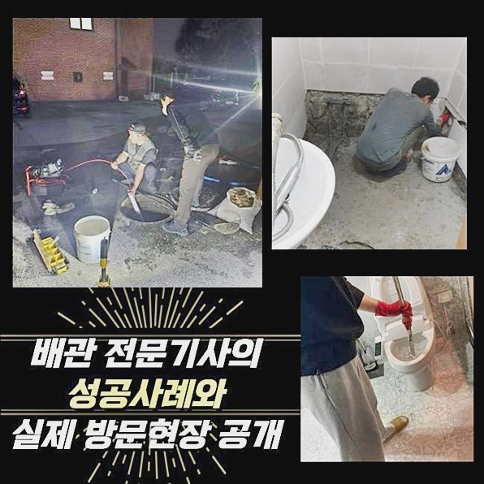
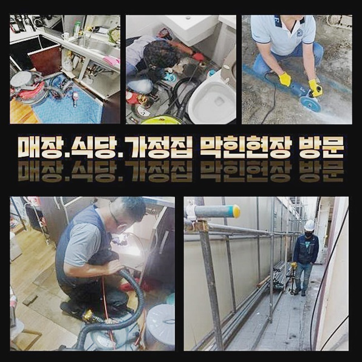
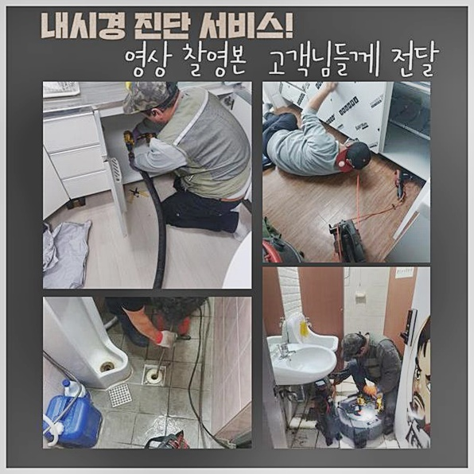
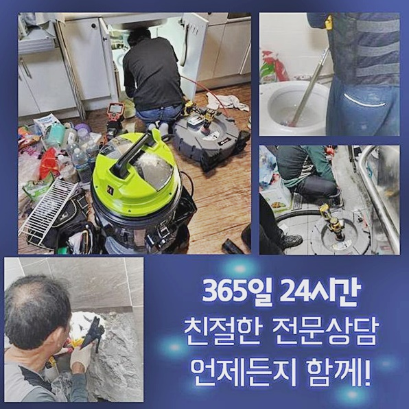
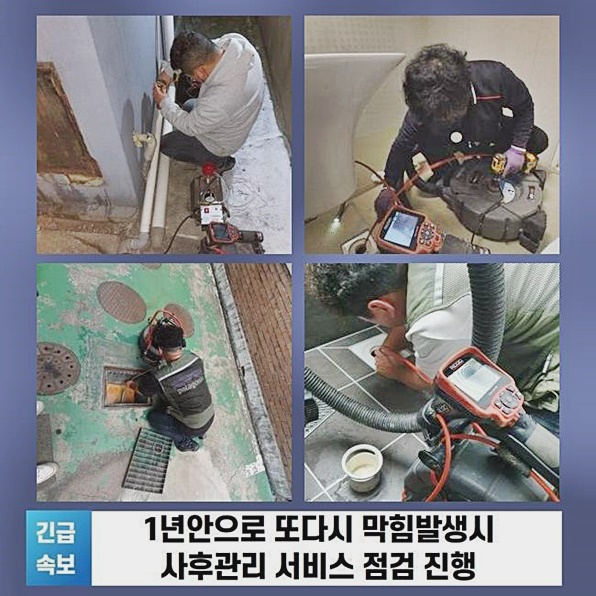
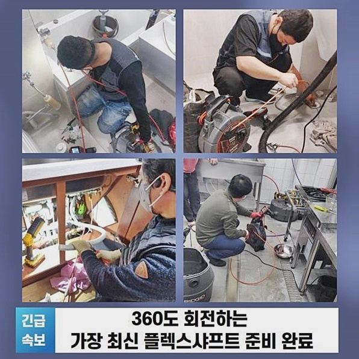

🏠 성남 성남동오수관막힘 금광동 악취차단 설비출장
성남 남동 싱크대막힘 전문 시공 후기

📋 작업 개요
- 위치: 성남 남동, 남동, 성남
- 서비스 유형: 싱크대막힘, 하수구막힘, 배관막힘, 누수수리, 역류해결, 뚫는업체, 배관청소, 고압세척, 악취차단
- 작업 일시: 2024. 9. 16. 14:14
- 업체명: 하수구수사대 (010-5615-2118)
🔍 문제 상황
성남 성남동오수관막힘 금광동 악취차단 설비출장
하수구막힘때문에 출동드린 의뢰자분의 음식점현장은 배수상태가 조금씩 느려졌다고 의뢰를주셨는데 이런상황이라면 신속하게 대처해야한다는 신호에요
자가조치를 시도해보았지만 잠시동안만 해결되고 답답함을 느끼신다면 전문적인작업을받아보시는게 좋겠습니다
빠른해결을 원하신다면 저희업체로 전화를주시면 곧장 출동해드려서 해결해드릴게요
영업시설이 막히게되었을때 확실히 뚫어드리고 깔끔한환경으로 유지하도록 도와드릴테니 걱정마세요
고객님의 설명을통해 판단을내리고 첫번째과정으로 오수들과찌꺼기를 석션기로 빨아들인후 배수관을열어 내부상황을 확인해보았죠
배관안쪽을 파악하고자 부속품들을 분리하여 살펴봤습니다
배관안속에 쌓여있는 기름슬러지와 오염물질을 깔끔히제거하고 정화작업도 진행했어요
악취의원인 막힘문제를 처리하고 원활히 배수될수있도록 조치해주었어요
깨끗하게 사용하시도록 유지방법부터 관리방법까지 일러드렸죠
신속정확한 대처를통해 배관을뚫어내 의뢰자의 편리함을 높일수있었네요
다음장소는 상가건물이었는데 필요한도구들을 준비한뒤 현장장소로 방문했어요

🔎 원인 분석
💡 전문가 진단: 정밀 진단 장비를 사용하여 슬러지의 고착 여부를 판명하고 타격/세척 작업을 실시했습니다.
물이빠지는것이 점차 느려졌다고 말씀해주셨고 셀프조치로 몇번 조치를 취해봤지만 확실히 뚫리지않아 불편함이 느껴진다고 하셨어요
배수문제는 전문적인지식이 필수적이므로 저희업체가 맡게되어 다행이에요
저희의 도움을통해 고객의불편함이 해소되었기를 바래요
재차막히는일이 발생하게되었을때 마음편안히 전화주신다면 신속한대처로 보여드리겠습니다
원활하게물이 흘러가지못하고 역류증상도 발발되어 악취문제도 연결된 상태였고 이런문제로 인하여 고객분께 불편함들을 초래했어요
싱크대사용시 물이빠지지않고 역류까지 발생되는것은 건강상으로도 해로울수가 있답니다
그래서 빠른조치가 필요했죠
여러현장의 경력이풍부한 전문가들이 방문드린뒤 막힌이유에 대해서 알아내드렸어요
발현된증세를 살펴보았더니 오염물때문에 막힘현상이 발생된걸로 알수있었죠
계속해서 강조하는것으로 이런현상은 빠른조치로 해결해주는것이 좋은데 하수관막힘으로 악취문제까지 연결된다면 일상에 막대한지장을 초래할수있어요
저희업체는 여러분들의 편리함을위하여 조속하게 처리해드릴것을 약속합니다!
알맞은조치를 통하여 문제를확실히 타파시킬게요
정상적인 배수시스템을 만들기위해 노력하고있고 혹시라도 실패하게된다면 수리금액을 받지않습니다

🔧 작업 과정
막히는일에있어 방지법까지 안내하고있죠
고객께서 쾌적환생활을 영위하실수있도록 심혈을기울여 작업해볼게요
저희업체에서는 배수관마다 특징이무엇인지 고려한후 해결책을 모색하는 과정을통해 수행하고있습니다
카메라장비를 사용해서 하수구내부를 살피고 구조에대한것과 오염도에대해 살피고있답니다
배관카메라는 오염물이 쌓여있는모습을 자세하게 살필수있게해주고 이것을토대로 의뢰자에게 상태를 설명드립니다
이런과정으로 효율성이있고 정밀한 작업과정을 거친답니다
주기로 하수구점검을 받아보시는것이 예방하는데있어 최고의 방법이에요
배관깊은곳에 다량의 석회물과 슬러지가 퇴적되기때문에 제거해주어야해요
앞에 설명했지만 하수구내시경을 쓰면 배관깊은쪽까지 진찰할수있어요
이것외에도 이물의 형태까지 확인할수가있죠
이러한이물을 소거시키려면 첨단기기들이 필요한데요
청소작업시 슬러지의경우 분쇄하기가 까다롭기에 물을활용해서 누그러뜨린뒤 흡입기로 빨아올리는것이 효과가좋아요
석회물로인해 단단한상태로 굳어버렸다면 샤프트기계를 이용해 제거시킬수있죠
오늘현장은 채소껍질과 기름이물 덩어리들이 하수도를 가로막은 상황이었는데요
이렇다보니 단순한 작업만으로는 문제처리가 쉽지않았고 플렉스샤프트기로 분쇄과정을 거친뒤 고압세척과정으로 이물제거를 진행하기로 작업계획을 정했어요
이러한계획을 통해서 막힘현상이 깔끔히 해결될걸로 기대할수있었죠
샤프트로 분쇄해보니 단단히굳어있던 이물과 찌꺼기들이 분해되었어요
막힌부분의경우 파쇄강도에있어 조절하며 진행해주어야했는데 이로인해 배관파손을 발현시키지않은채 마무리할수있었죠
분쇄를마치니 잔해물이 쉽게제거되서 청소작업을 진행하기 용이했으며 이다음에는 고압세척기계로 시도했는데요
수압이쎈 물줄기로쏘아 하수구내의 찌꺼기들을 소거시켰는데 배관에크랙을 발생시키기않게 신경써서 작업해야했죠


✅ 작업 완료
일련의과정을 마무리한뒤 기계들을챙겨 철수할수있었죠
하수구가 막히는것을 방치시키지말고 징조가나타날때 대처하실것을 권유드릴게요
만약 방치한다면 누수나역류같은 피해들로 연결될수있기에 신속한처리를 하셔야합니다
어떤지역이든 한시간안으로 내방가능하고 투명히 작업계획을 공개하고있사오니 걱정하지마세요
믿고맡겨만 주신다면 신뢰해주심에 보답할수있게끔 실패없는결과물로 보여드리도록 할게요!
문제와관련하여 궁금증이 풀리지않으셨다면 아무때나 전화하셔서 질의하시면 자세하게 응대해드리도록 할게요!




⚠️ 베란다 누수 및 방수 관리 방법
- ✅ 비가 많이 올 때 창틀 주변이나 아래층 천장에 얼룩이 생기는지 정기적으로 확인해 보세요.
- ✅ 우수관 주변 실리콘 마감이 들뜨거나 깨진 틈새가 있는지 손상 여부를 수시로 체크하세요.
- ✅ 베란다 바닥 타일의 줄눈(메지)이 소실되면 그 틈으로 물이 침투하여 누수가 유발됩니다.
- ✅ 누수 의심 증상 발견 시 방치하면 아래층 손실이 커지므로 즉시 전문가의 진단을 받으십시오.
💡 핵심 정리
- 확실한 장비 작업(내시경 점검 및 샤프트 스케일링)으로 원인을 뿌리 뽑습니다.
- 작업 후 1년 이내에 동일한 부위 재발 시 100% 무상 A/S 서비스를 보장합니다.
- 서울 · 경기 · 인천 전 지역에 24시간 언제든 긴급 출동할 수 있도록 항시 대기 중입니다.
❓ 자주 묻는 질문 (FAQ)
🚨 성남 남동 싱크대막힘 문제로 고민이신가요?
정확한 원인 진단과 확실한 시공으로 재발 없는 해결을 약속드립니다.
24시간 긴급 출동 | 서울 · 경기 · 인천 전지역 | 1년 내 재발 시 무상 A/S